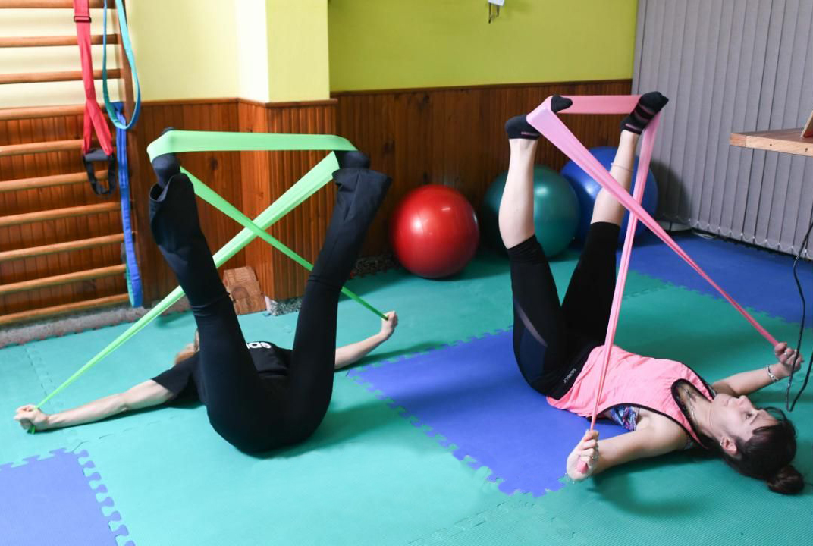

“El desarrollo integrativo en el entrenamiento de la flexibilidad y elongación unido a la fuerza facilita el desarrollo, adaptación a los cambios del cuerpo en todas las etapas de nuestra vida."
Diseñar una clase de flexibilidad no es armar una lista de ejercicios coreografiados. Es comprender la biomecánica profunda, regular el sistema nervioso a través de la respiración y aprender a aplicar la fuerza en el rango correcto.
Esta formación de 6 meses nace con el objetivo de cerrar la brecha entre la teoría científica y la práctica consciente. No está diseñada para que sumes un título más a tu pared; está pensada para que aprendas a leer cuerpos, interpretar restricciones y diseñar secuencias con verdadero sentido biológico.
Cuando entendemos el movimiento desde una mirada integrativa, dejamos de "estirar el síntoma" y empezamos a trabajar sobre el origen de la rigidez. El cuerpo solo cede espacio cuando se siente seguro.
El Arte de Moverte
Preparate para guiar procesos de transformación física basados en el respeto y la anatomía real.
Esta propuesta académica fue diseñada para profesionales que buscan dar un salto cualitativo en sus herramientas de intervención, alejándose de los enfoques genéricos y repetitivos.
Instructores de yoga, pilates, entrenadores personales y profes de educación física.
Kinesiólogos, masoterapeutas y facilitadores de técnicas corporales de rehabilitación.
Bailarines, acróbatas y deportistas de rendimiento que deseen optimizar su propia biomecánica.
Cursada una vez a la semana sincrónico teórico-técnico-práctico, las clases quedan grabadas para que puedas verlas y repetirlas cuantas veces quieras.
(1 sábado al mes) por Microsoft Team orientados al análisis técnico, correcciones y armado de secuencias.
Se entregan pdf con material teórico para que puedas consultarlos cuando vos quieras.
Asegurá tu espacio en la cohorte de Julio — Diciembre 2026. Elegí la opción de pago que mejor se adapte a tu planificación financiera:
Financiación regular mes a mes
5 Cuotas mensuales consecutivas. + Pago de Evaluación Final (correspondiente a un mes más.)
TOTAL $780.000
Un sólo Pago
Acceso completo bonificado en un único pago sin pago de Evaluación Final.
Cupos Estrictamente Limitados
Para garantizar un seguimiento real, corrección técnica personalizada en los encuentros en vivo y tutorías de calidad, las vacantes se cierran al completarse el cupo técnico.
QUIERO RESERVAR MI LUGAR¿Tenés dudas sobre las modalidades o el plan de pagos? Escribime al Whatsapp y lo coordinamos.